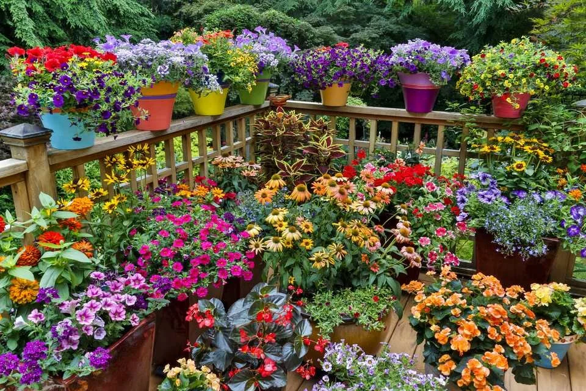
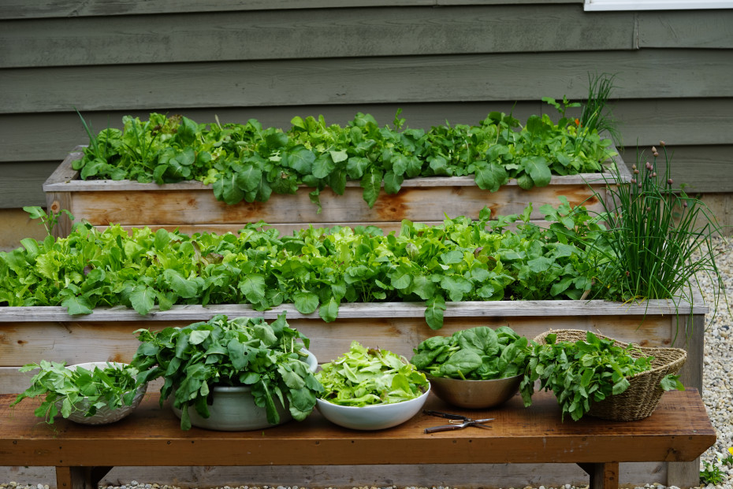
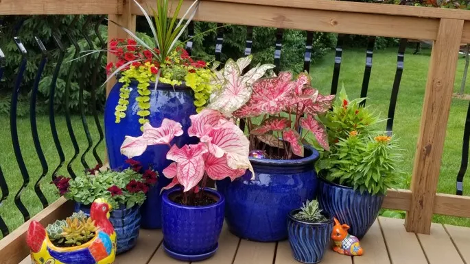
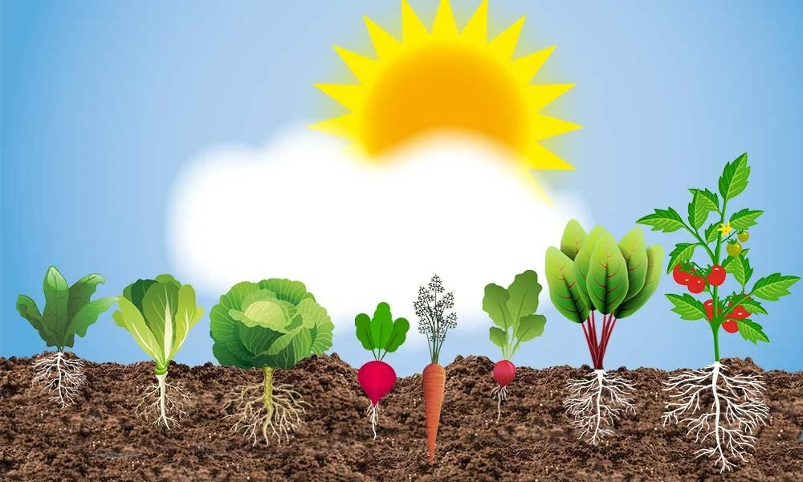
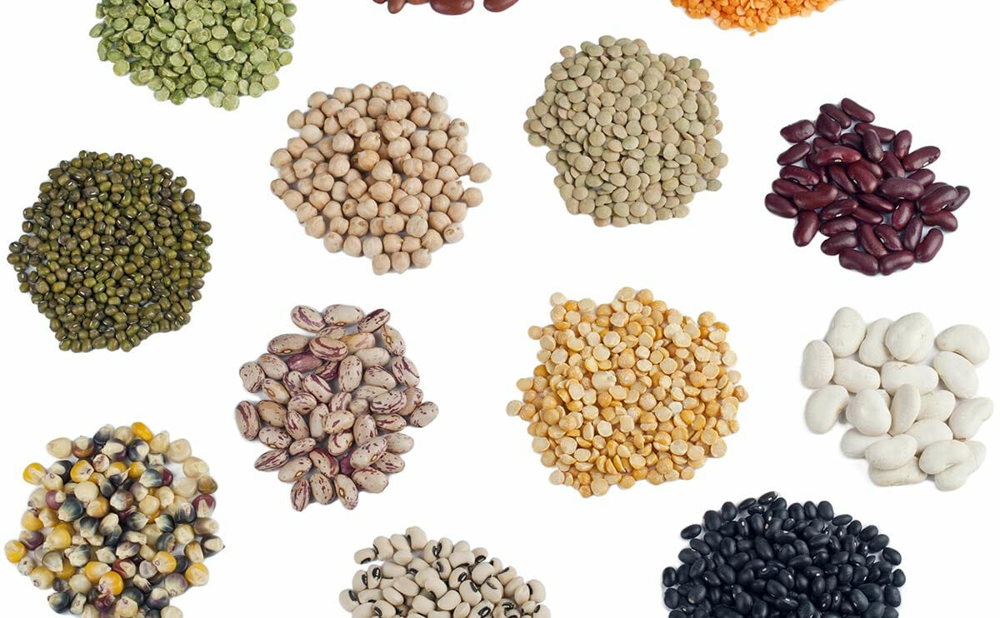
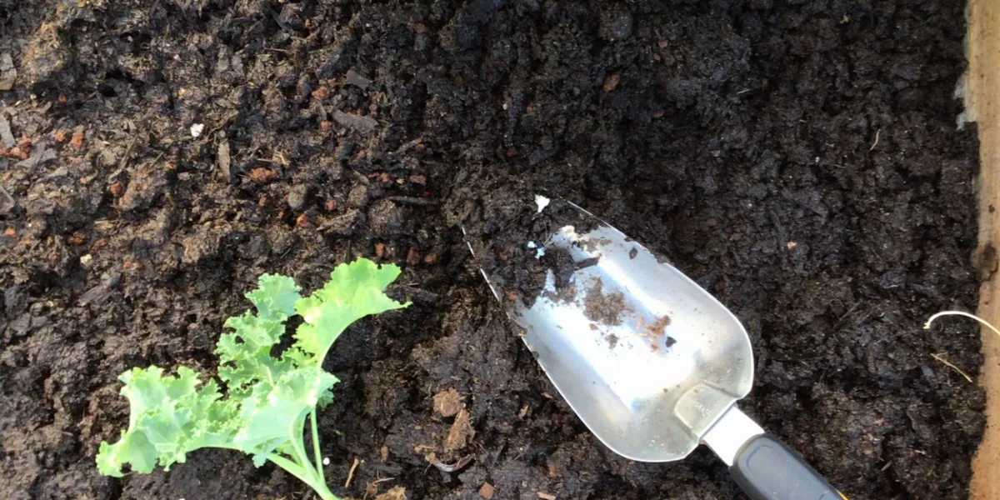
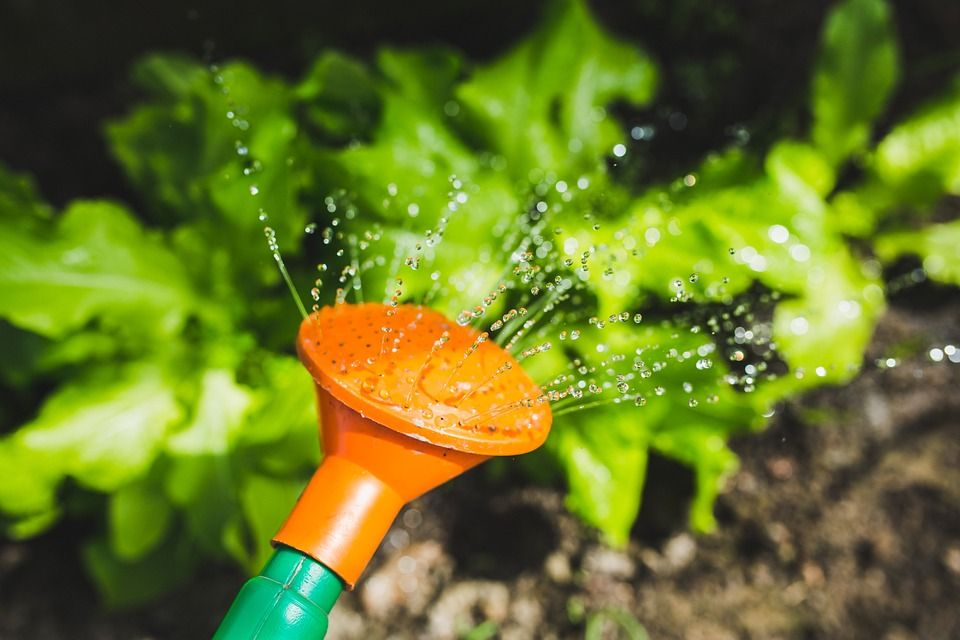
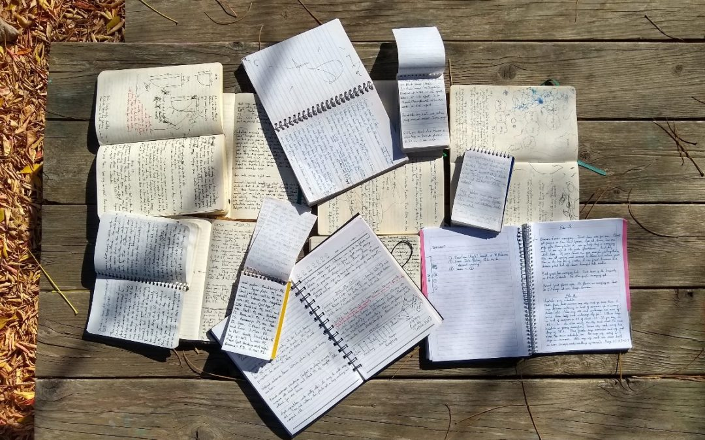

How to Urban Gardening – Beginner’s Guide
Having a garden at home brings so much joy. It can calm your mind, provide fresh homegrown food, and offer a wonderful experience for children as they watch their plants grow. In this beginner’s guide, I’ll share helpful tips and tricks to get you started with urban gardening.

Starting a Garden in a Small Space
Living in a city may limit your space, but it certainly doesn’t prevent you from growing your own vegetables. Even a small backyard, balcony, or rooftop can become a productive garden with the right setup.

How to Start Gardening at Home
Books, videos, and online research can help you avoid common mistakes, but nothing teaches you more than hands-on experience. Spending time observing your plants helps you understand what they need—whether it's more sunlight, water, or nutrients. Over time, you’ll learn to read the subtle signs your plants give you.

How Much Sunlight Does Your Garden Get?
This is one of the most important things to know before you begin. The amount of sunlight your space receives will guide you in choosing the right seeds or plants. Each plant has its own sunlight needs, so make sure to match your selections with your garden’s lighting conditions.

The Seeds
There are many types of gardens—such as butterfly gardens, container gardens, flower gardens, vegetable gardens, herb gardens, and more. When growing food, it’s always best to buy seeds from a trusted source. Organic and non-GMO seeds are ideal if you plan to consume what you grow.

Seed packets include helpful information on the back about spacing, depth, and growing conditions. At first, this may seem confusing, especially if you’re gardening in containers rather than soil beds. But with experience, it becomes easier to understand how to properly space seeds in pots or planters.
Prepare Your Soil
When gardening in containers, preparing the soil makes a big difference. While potting mix usually contains some nutrients, it’s often not enough to support vegetables throughout their growth. Plants in containers absorb nutrients more quickly than those growing directly in the ground.

Adding natural nutrients—such as manure or worm castings—helps create a richer growing environment. Always check the product label for recommended amounts, and choose organic options whenever possible.
How Much Water Do My Plants Need?
Both overwatering and underwatering can affect plant health. Tools like moisture meters can help you measure soil moisture, but over time you’ll learn to recognize what your plants need.

Your watering method will depend on your space. For a balcony garden, a simple watering can may be enough. For larger backyards, irrigation systems like sprinklers or drip lines can make watering easier. Some plants require more water than others, so grouping plants with similar needs together can simplify your care routine.
Take Notes on Your Plants’ Development
Keeping notes on your plants’ progress can save you time and money in future seasons. Tracking what grows well, how long harvests take, and how frequently plants need nutrients will help you improve your gardening skills year after year.
